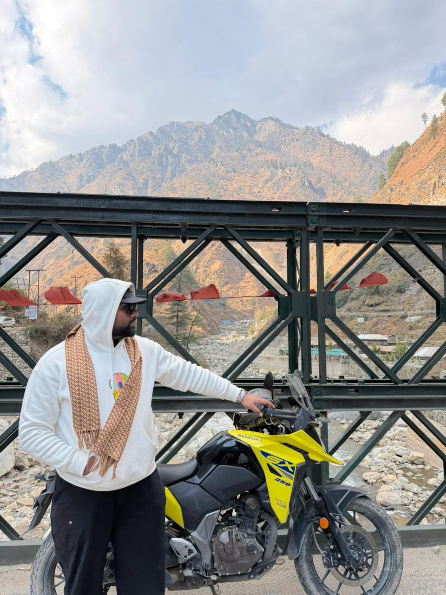

Sales Dashboard
Power BI dashboard showing sales, profit, regional performance, and KPI trends.
Power BI
KPI
Data Analyst | Power BI | SQL | Python
Engineering graduate passionate about data analytics and business intelligence. I build dashboards, automate reporting, and uncover insights using SQL, Power BI, Excel, and Python to solve real-world business problems.

Data Analyst
📂
Real Projects
📊
Business Insights
⚡
Data Driven
About
I am an aspiring Data Analyst with a passion for turning complex data into clear, actionable insights. My work combines data cleaning, analysis, visualization, and storytelling to help stakeholders understand what matters most.
Through practical projects in Power BI, SQL, Python, and Excel, I have developed experience creating dashboards, tracking KPIs, and extracting insights that support business growth and decision-making.
My goal is to contribute to data-driven teams while continuously learning and building impactful analytics solutions.
Skills
A focused stack for cleaning, analyzing, visualizing, and communicating business data.
Pivot tables, formulas, reporting, and analysis workflows.
Joins, filtering, grouping, business queries, and data extraction.
Dashboards, KPIs, visuals, measures, and stakeholder reports.
Pandas, NumPy, cleaning, exploration, and repeatable analysis.
Handling missing values, formats, duplicates, and consistency.
Designing views that make performance easy to understand.
Explaining insights clearly with context and next steps.
Version control, documentation, and project organization.
Projects
Power BI dashboard showing sales, profit, regional performance, and KPI trends.
Python analysis exploring customer behavior, churn patterns, and retention signals.
SQL queries used to extract insights from business datasets and answer practical questions.
Beyond Data
Apart from analytics, I am passionate about bikes and long rides. Riding has taught me patience, awareness, discipline, and quick decision-making - qualities I bring into data problem-solving too.


Rider mindset
Focus
Stay aware
Calm
Think clear
Drive
Keep moving